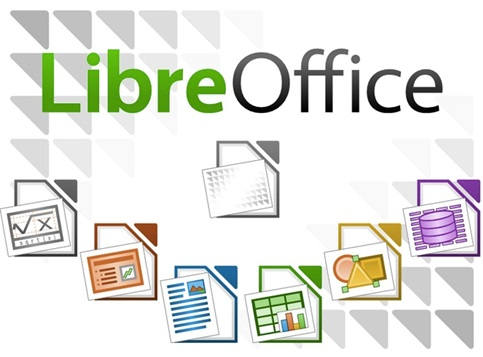

LibreOffice 4.3.0 Office Suite
Use LibreOffice 4.3.0 Office Suite.

LibreOffice is a free, open source office suite made up of six key programs:
- Writer (word processor)
- Calc (spreadsheet application)
- Impress (presentation engine)
- Draw (drawing and flowcharting application)
- Base (database and database frontend)
- Math (edits mathematics)
Please use the navigation bar to browse the site and learn more about LibreOffice programs Writer, Calc, and Impress.